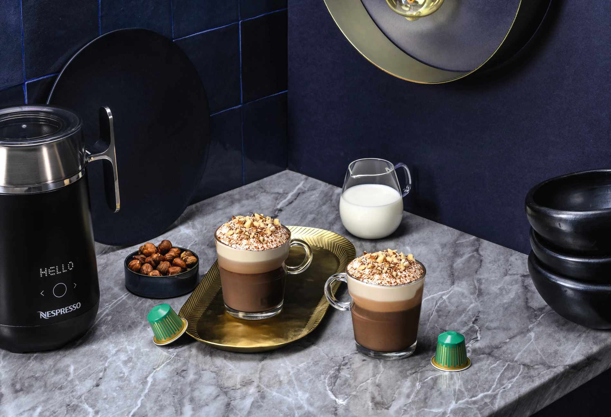

- Iniciar Sesion
- Registrarse
Tokyo Matcha Latte
En Japón, equilibrar sabores e ingredientes es un arte.

Ingredientes
-
Capsula Nespresso Tokyo Vivalto Lungo
-
Leche 150 ml.
-
Miel 15 g.
-
Polvo Matcha 15g.
-
Semillas de sésamo tostadas
Pasos a seguir
-
Colocá 150 ml de leche en el Aeroccino (dispositivo para espumar la leche).
-
Agregá a la leche media cucharada de polvo de Matcha y espumar en el formato caliente
-
Agregá 15ml de miel en una taza o vaso de la colección View y luego extraé una cásula de World
Explorations Tokyo Lungo en formato Lungo (110ml)
- Por último, agregá la leche, decorá con polvo de Matcha y semillas de sésamo tostadas ¡Y a
disfrutar!
Explorá otras recetas

Torta di Nocciole al Bicerin
¿Ya probaste la receta?
Compartinos tu opinión.